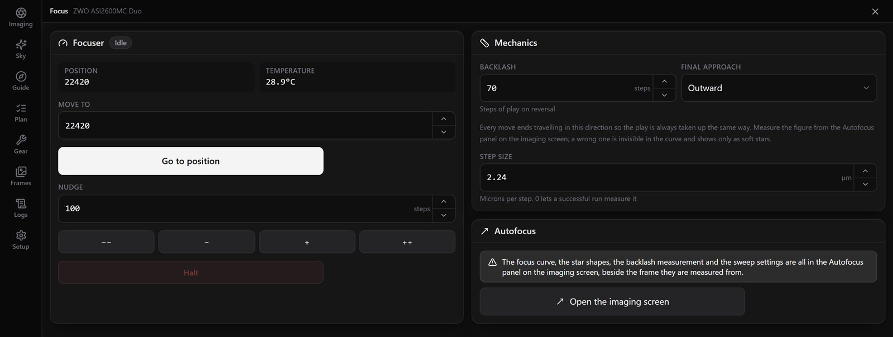

Autofocus that measures backlash before trusting it
A coarse search, then a fine pass, with a hyperbola fitted through the samples and R² reported. It measures the focuser's backlash, won't sweep one whose slack has never been measured, and learns the focus offset for each filter. When a run fails, it says so.